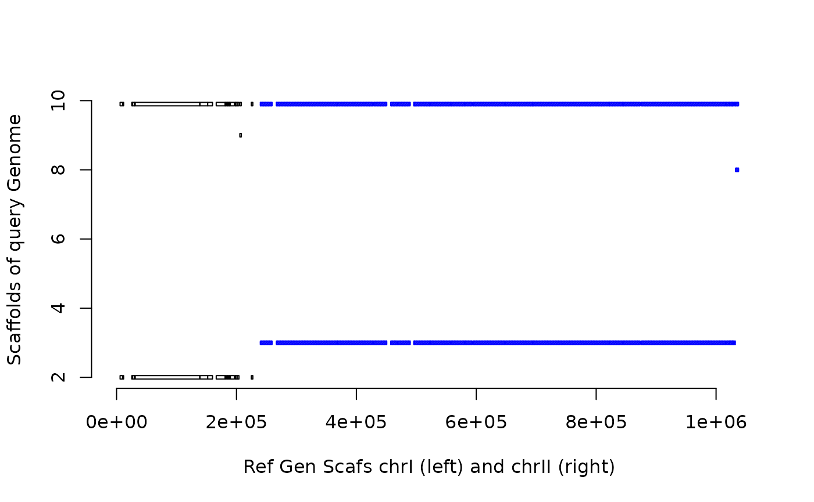
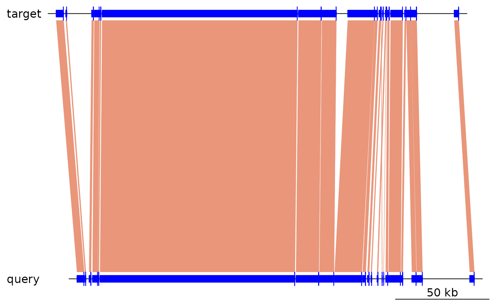
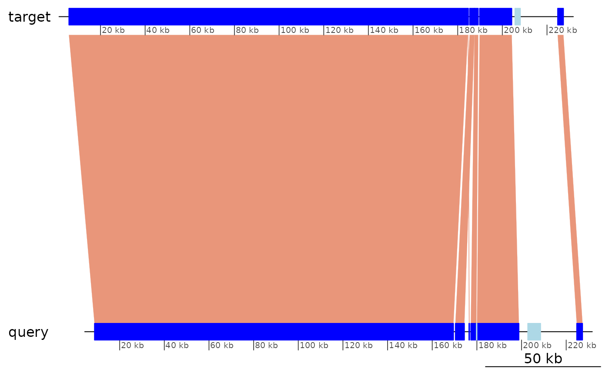
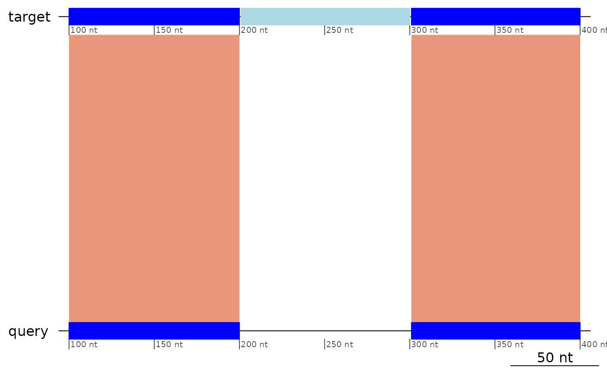
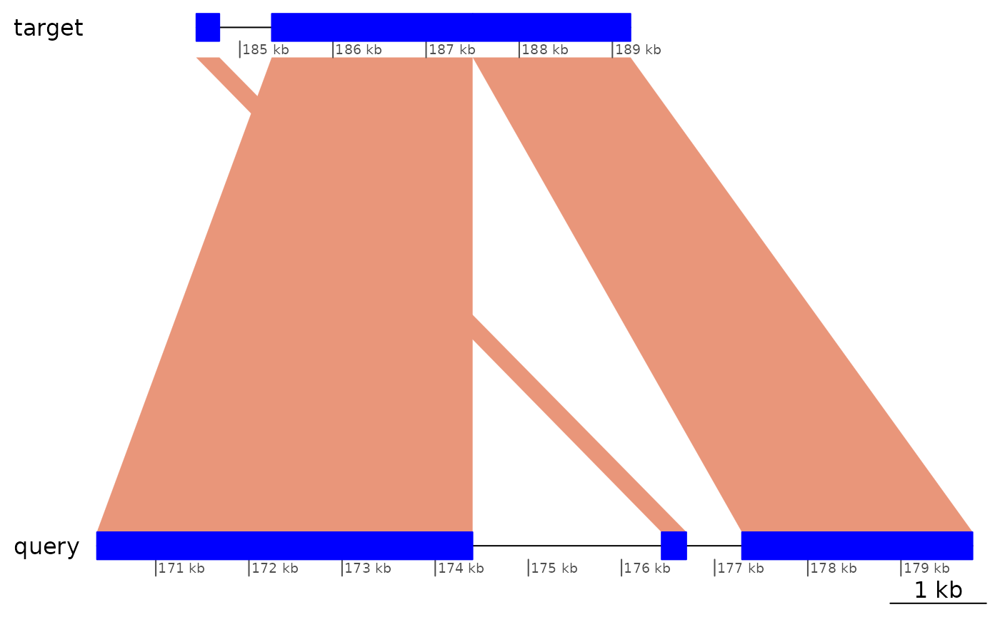
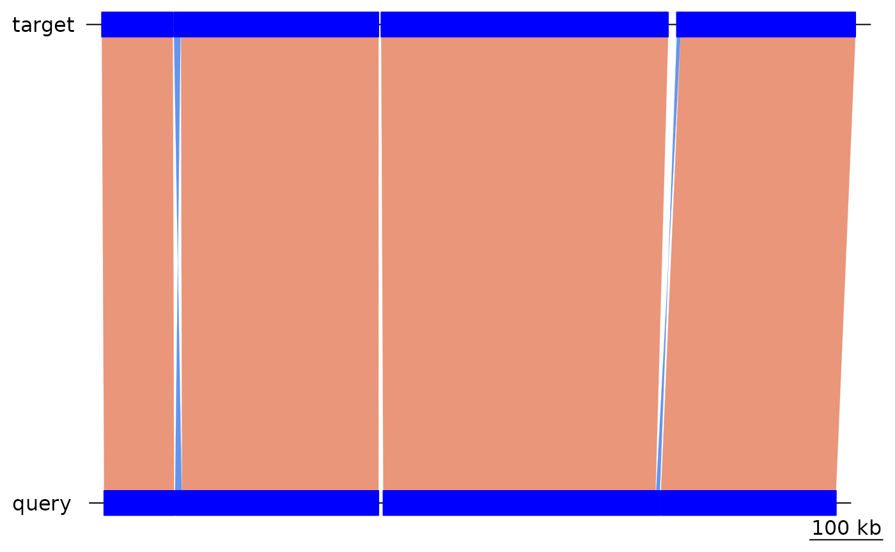
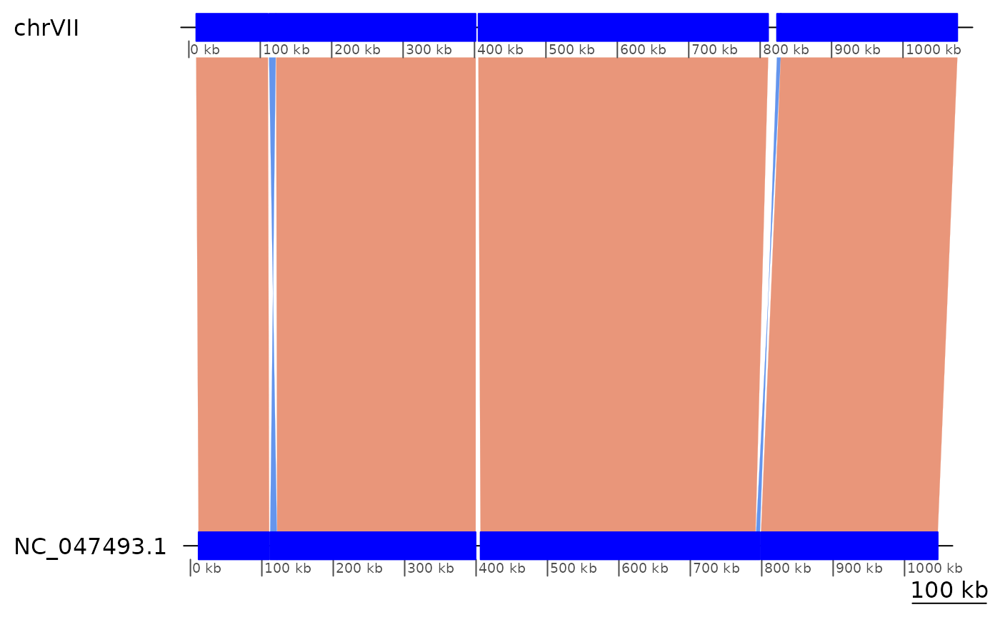
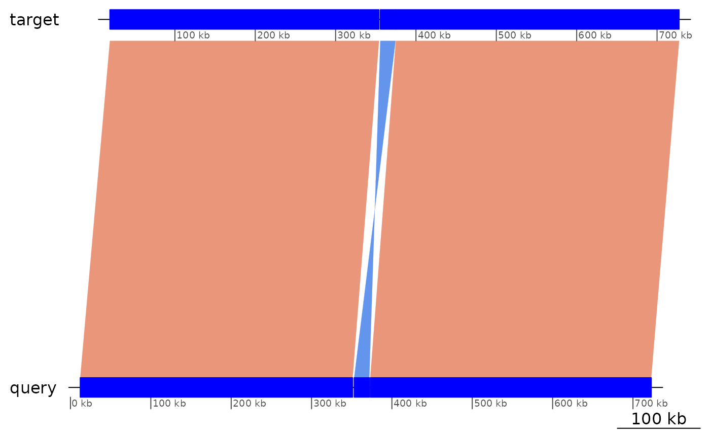

vignettes/GenomicBreaks.Rmd
GenomicBreaks.Rmd
knitr::opts_chunk$set(cache = TRUE)
knitr::opts_knit$set(verbose = TRUE)The GenomicBreaks R package contains tools for visualising and analysing characteristics associated with breakpoints between pairs of genomes.
Core packages that provide functions we use a lot.
suppressPackageStartupMessages({
library('GenomicBreaks')
library('BSgenome')
library('GenomicFeatures')
library('GenomicRanges')
library('ggplot2')
})We will use yeast data as an example, so let’s load the Scerevisiae BSgenome package.
library("BSgenome.Scerevisiae.UCSC.sacCer3")This package contains an example data file representing the alignment of the Saccharomyces paradoxus genome version ASM207905v1 to the SacCer3 reference genome of S. cerevisiae. An alignment file was produced with a Nextflow pairwise alignment pipeline and converted to GFF3 format with the maf-convert gff -J 1000000 command of the LAST package.
exdata <- system.file("extdata/SacCer3__SacPar.gff3.gz", package = "GenomicBreaks")
rtracklayer::import(exdata)## GRanges object with 590 ranges and 8 metadata columns:
## seqnames ranges strand | source type score
## <Rle> <IRanges> <Rle> | <factor> <factor> <numeric>
## [1] chrM 58008-76168 + | maf-convert match NA
## [2] chrM 58008-60967 + | maf-convert match_part 12243
## [3] chrM 61783-62447 + | maf-convert match_part 2557
## [4] chrM 63688-64744 + | maf-convert match_part 1520
## [5] chrM 66006-66345 + | maf-convert match_part 1159
## ... ... ... ... . ... ... ...
## [586] chrIX 300905-301573 - | maf-convert match_part 1576
## [587] chrXV 1073474-1074872 - | maf-convert match NA
## [588] chrXV 1073474-1074872 - | maf-convert match_part 3761
## [589] chrVII 1081381-1082672 - | maf-convert match NA
## [590] chrVII 1081381-1082672 - | maf-convert match_part 4057
## phase ID Name Target
## <integer> <character> <character> <character>
## [1] <NA> NC_018044.1.1 NC_018044.1:1-16261 <NA>
## [2] <NA> <NA> NC_018044.1:1-2820 NC_018044.1 1 2820
## [3] <NA> <NA> NC_018044.1:2834-3463 NC_018044.1 2834 3463
## [4] <NA> <NA> NC_018044.1:4786-5811 NC_018044.1 4786 5811
## [5] <NA> <NA> NC_018044.1:6743-7110 NC_018044.1 6743 7110
## ... ... ... ... ...
## [586] <NA> <NA> NC_047502.1:665227-6.. NC_047502.1 665227 6..
## [587] <NA> NC_047502.1.8 NC_047502.1:7842-9171 <NA>
## [588] <NA> <NA> NC_047502.1:7842-9171 NC_047502.1 7842 9171
## [589] <NA> NC_047502.1.9 NC_047502.1:2001-3295 <NA>
## [590] <NA> <NA> NC_047502.1:2001-3295 NC_047502.1 2001 3295
## Parent
## <CharacterList>
## [1]
## [2] NC_018044.1.1
## [3] NC_018044.1.1
## [4] NC_018044.1.1
## [5] NC_018044.1.1
## ... ...
## [586] NC_047502.1.7
## [587]
## [588] NC_047502.1.8
## [589]
## [590] NC_047502.1.9
## -------
## seqinfo: 17 sequences from an unspecified genome; no seqlengthsPairwise genome alignments are loaded in GBreaks() objects that wrap the GRanges class. By convention, we write that the query genome (the one that was provided as a FASTA file) is aligned to the target genome (the one that was indexed by the aligner). The target genome (on the left) is the main part of the object, and the query genome information (right) is contained in the metadata columns (mcols) of the structure. Information on contig or scaffold length is optionaly loaded from BSgenome objects, from which seqinfo data is extracted and passed to the GRanges. By convention, strand information of the alignment is held by the target GRanges, and the query GRanges are strandless. The objects are sorted by seqname first.
gb <- load_genomic_breaks(exdata, Scerevisiae)
gb## GBreaks object with 505 ranges and 2 metadata columns:
## seqnames ranges strand | score query
## <Rle> <IRanges> <Rle> | <numeric> <GRanges>
## [1] chrI 5860-10010 + | 10609 NC_047487.1:8723-12716
## [2] chrI 11157-11782 + | 1253 NC_047487.1:13035-13680
## [3] chrI 25371-26528 + | 3651 NC_047487.1:15380-16537
## [4] chrI 26849-29699 + | 6130 NC_047487.1:17263-20175
## [5] chrI 29937-30607 + | 767 NC_047487.1:20203-20866
## ... ... ... ... . ... ...
## [501] chrM 67039-67870 + | 1441 NC_018044.1:7758-8439
## [502] chrM 68205-68580 + | 830 NC_018044.1:8783-9180
## [503] chrM 69178-76168 + | 14528 NC_018044.1:9650-16261
## [504] chrM 77356-80022 + | 8066 NC_018044.1:53206-55865
## [505] chrM 80919-85779 + | 6712 NC_018044.1:57885-61592
## -------
## seqinfo: 17 sequences (1 circular) from sacCer3 genome
gb$query## GRanges object with 505 ranges and 0 metadata columns:
## seqnames ranges strand
## <Rle> <IRanges> <Rle>
## [1] NC_047487.1 8723-12716 *
## [2] NC_047487.1 13035-13680 *
## [3] NC_047487.1 15380-16537 *
## [4] NC_047487.1 17263-20175 *
## [5] NC_047487.1 20203-20866 *
## ... ... ... ...
## [501] NC_018044.1 7758-8439 *
## [502] NC_018044.1 8783-9180 *
## [503] NC_018044.1 9650-16261 *
## [504] NC_018044.1 53206-55865 *
## [505] NC_018044.1 57885-61592 *
## -------
## seqinfo: 17 sequences from an unspecified genome; no seqlengthsWith the plyranges package it is easy to manipulate GBreaks objects, in particular when filtering on features of the query genome.
# Subset for chrI on the target genome.
gb |> plyranges::filter(seqnames == "chrI")## GBreaks object with 22 ranges and 2 metadata columns:
## seqnames ranges strand | score query
## <Rle> <IRanges> <Rle> | <numeric> <GRanges>
## [1] chrI 5860-10010 + | 10609 NC_047487.1:8723-12716
## [2] chrI 11157-11782 + | 1253 NC_047487.1:13035-13680
## [3] chrI 25371-26528 + | 3651 NC_047487.1:15380-16537
## [4] chrI 26849-29699 + | 6130 NC_047487.1:17263-20175
## [5] chrI 29937-30607 + | 767 NC_047487.1:20203-20866
## ... ... ... ... . ... ...
## [18] chrI 197472-198417 + | 644 NC_047487.1:187015-188000
## [19] chrI 198484-200975 + | 9880 NC_047487.1:192875-195376
## [20] chrI 200976-204211 + | 11801 NC_047487.1:195559-198812
## [21] chrI 205647-208058 + | 8709 NC_047494.1:515228-517518
## [22] chrI 224773-227362 + | 11047 NC_047487.1:224711-227317
## -------
## seqinfo: 17 sequences (1 circular) from sacCer3 genome
# Subset for NC_047487.1 on the query genome
gb |> plyranges::filter(seqnames(query) == "NC_047487.1")## GBreaks object with 24 ranges and 2 metadata columns:
## seqnames ranges strand | score query
## <Rle> <IRanges> <Rle> | <numeric> <GRanges>
## [1] chrI 5860-10010 + | 10609 NC_047487.1:8723-12716
## [2] chrI 11157-11782 + | 1253 NC_047487.1:13035-13680
## [3] chrI 25371-26528 + | 3651 NC_047487.1:15380-16537
## [4] chrI 26849-29699 + | 6130 NC_047487.1:17263-20175
## [5] chrI 29937-30607 + | 767 NC_047487.1:20203-20866
## ... ... ... ... . ... ...
## [20] chrI 200976-204211 + | 11801 NC_047487.1:195559-198812
## [21] chrI 224773-227362 + | 11047 NC_047487.1:224711-227317
## [22] chrVII 402974-403256 + | 730 NC_047487.1:179771-180020
## [23] chrVIII 527711-528802 + | 3617 NC_047487.1:202798-203906
## [24] chrVIII 530396-533532 + | 6424 NC_047487.1:205275-208524
## -------
## seqinfo: 17 sequences (1 circular) from sacCer3 genome## GBreaks object with 3 ranges and 3 metadata columns:
## seqnames ranges strand | score query Width
## <Rle> <IRanges> <Rle> | <numeric> <GRanges> <integer>
## [1] chrI 5860-10010 + | 10609 NC_047487.1:8723-12716 4151
## [2] chrI 11157-11782 + | 1253 NC_047487.1:13035-13680 626
## [3] chrI 25371-26528 + | 3651 NC_047487.1:15380-16537 1158
## -------
## seqinfo: 17 sequences (1 circular) from sacCer3 genome## GBreaks object with 3 ranges and 2 metadata columns:
## seqnames ranges strand | score query
## <Rle> <IRanges> <Rle> | <integer> <GRanges>
## [1] chrI 5860-10010 + | 4151 NC_047487.1:8723-12716
## [2] chrI 11157-11782 + | 626 NC_047487.1:13035-13680
## [3] chrI 25371-26528 + | 1158 NC_047487.1:15380-16537
## -------
## seqinfo: 17 sequences (1 circular) from sacCer3 genome
# Etc…See the vignette of plyranges for more details.
Let us define an alignment stop to be a position defined in either the target or query genome, where an alignment begins or ends. Looking at the first line in the gb object above, ChrI positions 5860 and 10010 of the target would be defined as alignment stops. Correspondingly, we have positions 8723 and 12176 in NC_047487.1 of the query genome as alignment stops.
The function get_bps() takes in a GBreaks pairwise alignment or a simple GRanges object, and produces a GRanges object of it’s associated alignment stops. It has direction, stranded and sorted options to refind its output.
## GRanges object with 3 ranges and 0 metadata columns:
## seqnames ranges strand
## <Rle> <IRanges> <Rle>
## [1] chrI 5860 *
## [2] chrI 10010 *
## [3] chrI 11157 *
## -------
## seqinfo: 17 sequences (1 circular) from sacCer3 genome## GRanges object with 3 ranges and 0 metadata columns:
## seqnames ranges strand
## <Rle> <IRanges> <Rle>
## [1] chrI 5860 *
## [2] chrI 11157 *
## [3] chrI 25371 *
## -------
## seqinfo: 17 sequences (1 circular) from sacCer3 genome## GRanges object with 3 ranges and 0 metadata columns:
## seqnames ranges strand
## <Rle> <IRanges> <Rle>
## [1] chrI 5860 +
## [2] chrI 10010 -
## [3] chrI 11157 +
## -------
## seqinfo: 17 sequences (1 circular) from sacCer3 genome## GRanges object with 3 ranges and 0 metadata columns:
## seqnames ranges strand
## <Rle> <IRanges> <Rle>
## [1] chrI 5860 +
## [2] chrI 11157 +
## [3] chrI 25371 +
## -------
## seqinfo: 17 sequences (1 circular) from sacCer3 genome## GRanges object with 3 ranges and 0 metadata columns:
## seqnames ranges strand
## <Rle> <IRanges> <Rle>
## [1] chrI 10010 -
## [2] chrI 11782 -
## [3] chrI 26528 -
## -------
## seqinfo: 17 sequences (1 circular) from sacCer3 genome## GRanges object with 3 ranges and 0 metadata columns:
## seqnames ranges strand
## <Rle> <IRanges> <Rle>
## [1] NC_047487.1 8723 *
## [2] NC_047487.1 13035 *
## [3] NC_047487.1 15380 *
## -------
## seqinfo: 17 sequences from an unspecified genome; no seqlengths## GRanges object with 3 ranges and 0 metadata columns:
## seqnames ranges strand
## <Rle> <IRanges> <Rle>
## [1] NC_018044.1 1 *
## [2] NC_018044.1 2820 *
## [3] NC_018044.1 2834 *
## -------
## seqinfo: 17 sequences from an unspecified genome; no seqlengthsNow, let us define a genomic breakpoint (or simply breakpoint) to be a genomic structural mutation, arising from breakage and repair of the chromosome. Such structural events include insertion, deletion, inversion and translocation, and often arise during recombination.
This package seeks to determine, of the group of alignment stops, which are likely genomic breakpoints and analyse them. Thus, filtering out alignment stops that are a result of bioinformatic errors.
If the positions of the centromeres are known, an annotation file can be crafted to indicate the coordinates of the short and long arms, and the function flagLongShort() can be used to transfer this annotation to the GBreaks object.
annot <- GRanges(c("chrI:1-151465", "chrI:151582-230218"))
annot$Type <- c("short", "long")
flagLongShort(gb, annot)## GBreaks object with 505 ranges and 3 metadata columns:
## seqnames ranges strand | score query
## <Rle> <IRanges> <Rle> | <numeric> <GRanges>
## [1] chrI 5860-10010 + | 10609 NC_047487.1:8723-12716
## [2] chrI 11157-11782 + | 1253 NC_047487.1:13035-13680
## [3] chrI 25371-26528 + | 3651 NC_047487.1:15380-16537
## [4] chrI 26849-29699 + | 6130 NC_047487.1:17263-20175
## [5] chrI 29937-30607 + | 767 NC_047487.1:20203-20866
## ... ... ... ... . ... ...
## [501] chrM 67039-67870 + | 1441 NC_018044.1:7758-8439
## [502] chrM 68205-68580 + | 830 NC_018044.1:8783-9180
## [503] chrM 69178-76168 + | 14528 NC_018044.1:9650-16261
## [504] chrM 77356-80022 + | 8066 NC_018044.1:53206-55865
## [505] chrM 80919-85779 + | 6712 NC_018044.1:57885-61592
## Arm
## <factor>
## [1] short
## [2] short
## [3] short
## [4] short
## [5] short
## ... ...
## [501] NA
## [502] NA
## [503] NA
## [504] NA
## [505] NA
## -------
## seqinfo: 17 sequences (1 circular) from sacCer3 genomeAd-hoc index measuring to what extent a scaffold of the target genome is mostly aligned to a single scaffold in the query genome. See ?synteny_index for details. One limitation to the use of this index is that it requires that at least the query genome is a complete chromosome assembly.
synteny_index(gb)## [1] 0.9954872
synteny_index(swap(gb))## [1] 0.9954982Ad-hoc index measuring the correlation of the coordinates of the syntenic alignments in scaffolds of a target genome and their best match in the query genome. See ?correlation_index for details. This index is more robust to the presence of uncollapsed haplotypes in the query genome.
## [1] 0.9942222
correlation_index(swap(gb))## [1] 0.9946129The GOC() function calcluates the Gene Order Conservation number defined by Rocha (2003, https://doi.org/10.1016/j.tig.2003.09.011) as “the average number of orthologues for which the consecutive orthologue co-occurs close by in the other genome. It varies between 0 (no co-occurrence) and 1 (complete gene order conservation)”.
Note that calculating GOC on whole-genome alignments is not expected to produce meaningful results, and the example below is just to show that the computation is possible. This function is more useful when comparing the position of orthologues, represented in a GBreaks object.
GOC(gb)## [1] 0.9227557## [1] 0.9123173We can use the function scaf_align_plot to see the alignment of query scaffolds/chromosomes onto a specific target scaffold/chromosome of interest.
scaf_align_plot(gb, scaf = "chrI")Here we have plotted the alignments on the Okinawa genome (y-axis) onto the Osaka genome, scaffold 2 (x-axis). The coverage of the alignment is the bar along the top.
We can plot alignments for two of the target scaffolds side-by-side, using align_scaf_plot-2. This can be used in aid of superscaffolding.
align_scaf_plot_2(gb, scaf = c("chrI","chrII"))
As you can see, scaffold 2 of the query genome aligns to the majority of both target scaffolds. This could be used as evidence to support the superscaffolding of these two scaffolds - in an effort toward chromosomal assembly.
Large syntenic regions can often appear cluttered with alignment breaks, spanning just a few basepairs. They are either an artefact (for instance in case of incomplete purge of haplotypes) and or true breakpoint. The algorithm in coalesce_contigs is used to produce a new GRanges object with fewer alignment breaks by coalescing alignments separated by short (user specified) distances. This distance need be agreeable in both the target and query genome in order for the coalscion to happen.
For example, coalescing gaps of less than 500 basepairs in the gb alignment:
coa <- coalesce_contigs(gb)
length(gb)## [1] 505
length(coa)## [1] 88The resulting GBreaks object has far fewer alignments and therefore far fewer alignment stops. The algorithm is an initial step in alignment stop filtering, with the goal of a reduced number of alignment stops that have a high probability of being breakpoints.
To visualise synteny it is clearer to plot from the coalseced objects.
plotApairOfChrs(gb, "chrI")
plotApairOfChrs(coa, "chrI")
Remember that we are working with one-to-one alignments. Therefore deletions, insertions and as a consequence copy number variations, are not in the aligned regions. Nevertheless, we can detect translocations from one chromosomal region to another. We define them by alignment pairs that interrupt the colinearity between two other pairs, and that are not inversions.
The translocation below:
┌──────────────┬──────────────┬──────────────┐
│ chrA:101-200 │ chrA:201-300 │ chrA:301-400 │ (Target genome)
└──────────────┴──────────────┴──────────────┘
+ + + (Alignment direction)
┌──────────────┬──────────────┬──────────────┐
│ chrB:101-200 │ chrC:201-300 │ chrB:301-400 │ (Query genome)
└──────────────┴──────────────┴──────────────┘Is represented as:
exampleTranslocation## GBreaks object with 3 ranges and 1 metadata column:
## seqnames ranges strand | query
## <Rle> <IRanges> <Rle> | <GRanges>
## [1] chrA 100-200 + | chrB:100-200
## [2] chrA 201-300 + | chrC:201-300
## [3] chrA 301-400 + | chrB:301-400
## -------
## seqinfo: 1 sequence from an unspecified genome
plotApairOfChrs(exampleTranslocation)
See vignette("StructuralVariants", package = "GenomicBreaks") for other examples of translocations.
Note also that without an outgroup it is not possible to know in which genome the move happened.
flagTranslocations(exampleTranslocation)## GBreaks object with 3 ranges and 2 metadata columns:
## seqnames ranges strand | query tra
## <Rle> <IRanges> <Rle> | <GRanges> <logical>
## [1] chrA 100-200 + | chrB:100-200 TRUE
## [2] chrA 201-300 + | chrC:201-300 FALSE
## [3] chrA 301-400 + | chrB:301-400 FALSE
## -------
## seqinfo: 1 sequence from an unspecified genome## GBreaks object with 32 ranges and 3 metadata columns:
## seqnames ranges strand | query score
## <Rle> <IRanges> <Rle> | <GRanges> <integer>
## 1 chrI 5860-184523 + | NC_047487.1:8723-169504 178664
## 2 chrI 184533-184781 + | NC_047487.1:176430-176696 249
## 3 chrI 185343-187499 + | NC_047487.1:170368-174401 2157
## 4 chrI 187502-189195 + | NC_047487.1:177293-179769 1694
## 12 chrIII 151968-168384 + | NC_047489.1:179584-195977 16417
## .. ... ... ... . ... ...
## 64 chrXIV 777507-778973 - | NC_047491.1:15022-16471 1467
## 65 chrXIV 778976-781047 + | NC_047500.1:768251-770345 2072
## 72 chrXV 855061-968849 + | NC_047501.1:832989-947263 113789
## 73 chrXV 969434-970268 - | NC_047501.1:953757-954546 835
## 74 chrXV 976413-980862 + | NC_047501.1:948879-953466 4450
## tra
## <logical>
## 1 TRUE
## 2 TRUE
## 3 FALSE
## 4 FALSE
## 12 TRUE
## .. ...
## 64 FALSE
## 65 FALSE
## 72 TRUE
## 73 FALSE
## 74 FALSE
## -------
## seqinfo: 17 sequences (1 circular) from sacCer3 genome
plotApairOfChrs(coa, chrT = "chrI", xlim = gb2xlim(coa[2:4]))
See vignette("StructuralVariants", package = "GenomicBreaks") for definitions.
More inversions are found after coalescing colinear blocks because of situations where + - + was + - - + before collapsing.
flagInversions(coa)## GBreaks object with 88 ranges and 3 metadata columns:
## seqnames ranges strand | query score
## <Rle> <IRanges> <Rle> | <GRanges> <integer>
## [1] chrI 5860-184523 + | NC_047487.1:8723-169504 178664
## [2] chrI 184533-184781 + | NC_047487.1:176430-176696 249
## [3] chrI 185343-187499 + | NC_047487.1:170368-174401 2157
## [4] chrI 187502-189195 + | NC_047487.1:177293-179769 1694
## [5] chrI 189813-204211 + | NC_047487.1:180061-198812 14399
## ... ... ... ... . ... ...
## [84] chrM 6313-9737 - | NC_018044.1:62854-65728 3425
## [85] chrM 12828-50712 + | NC_018044.1:22453-53190 37885
## [86] chrM 56625-57960 + | NC_018044.1:70280-71345 1336
## [87] chrM 58008-76168 + | NC_018044.1:1-16261 18161
## [88] chrM 77356-85779 + | NC_018044.1:53206-61592 8424
## inv
## <Rle>
## [1] FALSE
## [2] FALSE
## [3] FALSE
## [4] FALSE
## [5] FALSE
## ... ...
## [84] FALSE
## [85] FALSE
## [86] FALSE
## [87] FALSE
## [88] FALSE
## -------
## seqinfo: 17 sequences (1 circular) from sacCer3 genome
showInversions(flagInversions(coa))## GBreaks object with 12 ranges and 3 metadata columns:
## seqnames ranges strand | query score
## <Rle> <IRanges> <Rle> | <GRanges> <integer>
## 10 chrIII 11513-149405 + | NC_047489.1:41910-177147 137893
## 11 chrIII 149866-151360 - | NC_047489.1:178201-178974 1495
## 12 chrIII 151968-168384 + | NC_047489.1:179584-195977 16417
## 34 chrVII 10270-110708 + | NC_047493.1:11332-110230 100439
## 35 chrVII 112352-121552 - | NC_047493.1:111748-121071 9201
## .. ... ... ... . ... ...
## 39 chrVII 823466-828795 - | NC_047493.1:792155-797486 5330
## 40 chrVII 828909-1076119 + | NC_047493.1:799044-1046538 247211
## 52 chrX 19114-354004 + | NC_047496.1:12159-351096 334891
## 53 chrX 355632-374591 - | NC_047496.1:353062-371883 18960
## 54 chrX 374938-727499 + | NC_047496.1:373079-722743 352562
## inv
## <Rle>
## 10 TRUE
## 11 FALSE
## 12 FALSE
## 34 TRUE
## 35 FALSE
## .. ...
## 39 FALSE
## 40 FALSE
## 52 TRUE
## 53 FALSE
## 54 FALSE
## -------
## seqinfo: 17 sequences (1 circular) from sacCer3 genome
showInversions(flagInversions(coa)) |> plyranges::slice(1:3) |> plotApairOfChrs()
showInversions(flagInversions(coa)) |> plyranges::slice(4:9) |> plotApairOfChrs()
showInversions(flagInversions(coa)) |> plyranges::slice(10:12) |> plotApairOfChrs()
# lgaps <- function(reduced_gr) {
# # Flag inversions.
# # WHAT FOLLOWS ASSUMES THAT THE FLAG IS ON THE LEFT-SIDE BLOCK OF THE TRIPLE
# lgaps <- flagInversions(reduced_gr)
# # Extract inversions
# invs <- lgaps[lgaps$inv]
# # Extend inversion of 1 bp so that they overlap with their neighbor gap
# invs <- shift(invs, 1)
# # Remove strand information
# strand(lgaps) <- "*"
# # Then extract gap positions ignoring strand
# lgaps <- gaps(lgaps)
# # Remove bogus gaps on + and - strands
# lgaps <- lgaps[strand(lgaps) == "*"]
# # Return the gaps overlapping with the flagged inversions
# subsetByOverlaps(lgaps, invs)
# }
#
# # Using coa and not gbs for reason on better detection explained above.
# inv.lgaps <- sapply(coa, lgaps) |> SimpleList()
#
# data.frame(width=width(inv.lgaps$Oki_Osa)) |>
# ggplot(aes(width)) + geom_histogram() + scale_x_log10()
#
# inv.lgaps.Seq <- SimpleList()
#
# inv.lgaps.Seq$Oki_Osa <- BSgenome::getSeq(OKI2018_I69, inv.lgaps$Oki_Osa)
# inv.lgaps.Seq$Oki_Kum <- BSgenome::getSeq(OKI2018_I69, inv.lgaps$Oki_Kum)
# inv.lgaps.Seq$Osa_Oki <- BSgenome::getSeq(OSKA2016v1.9, inv.lgaps$Osa_Oki)
# inv.lgaps.Seq$Osa_Aom <- BSgenome::getSeq(OSKA2016v1.9, inv.lgaps$Osa_Aom)
# inv.lgaps.Seq$Oki_Bar <- BSgenome::getSeq(OKI2018_I69, inv.lgaps$Oki_Bar)
# inv.lgaps.Seq$Bar_Oki <- BSgenome::getSeq(Bar2_p4, inv.lgaps$Bar_Oki)Repeated regions of genomes are notoriously difficult to assemble and align. Thus, information about an alignment stop’s proximity to a tandem repeat is useful information in breakpoint classification. Given a user-defined tolerance, the function tan_bp will classify alignment stops as either far from, close to, or within tandem repeats (elements 1,2 and 3 of the produced list, respectively). The function requires the tandem repeat coverage of one of the genomes. By default, the function will expect the target genome tandem coverage. Setting query_tf = TRUE will switch the outcome to be query genome oriented.
#
# tan_O <- rtracklayer::import.gff3(system.file("extdata/OSKA2016.tantanf4w100.gff3.gz", package="GenomicBreaks"))
# tan_O <- GRanges(tan_O, seqinfo = seqinfo(OSKA2016))
# tan_gr_O <- tan_bp(gr_ob = gr_O_Oki, tan = tan_O, tol = 50)
# tan_gr_O
#
# tan_Oki <- rtracklayer::import.gff3(system.file("extdata/I69-5.tantanf4w100.gff3.gz", package="GenomicBreaks"))
# tan_Oki <- GRanges(tan_Oki, seqinfo = seqinfo(OKI2018_I69))
# tan_gr_Oki <- tan_bp(gr_ob = gr_O_Oki, tan = tan_Oki, tol = 50, query_tf = TRUE)
# tan_gr_OkiWe can use another script to plot the density of tandem repeats around alignment stops (and breakpoints). In the following plots, breakpoints are aligned at the centre of the plots. Intuitively, this function can be generalised to see the density of any binary coverage characteristic around breakpoints, given a GRanges object with per-base coverage of a given characteristic. Here we stick with tandem repeat info:
# hm_tan_O <- gr_O_Oki %>%
# feature_coverage(tan_O, win = 1000, lab = "Osaka ~ Okinawa", direction = "left") %>%
# smoothHeatmap(output.size = c(2000,500), algorithm = "kernel") %T>%
# plotHeatmap
#
# hm_red_tan_O <- reduced_gr_O_Oki %>%
# feature_coverage(tan_O, win = 1000, lab = "Osaka ~ Okinawa", direction = "left") %>%
# smoothHeatmap(output.size = c(2000,500), algorithm = "kernel") %T>%
# plotHeatmap
#
# hm_tan_Oki <- gr_Oki_O %>%
# feature_coverage(tan_Oki, win = 1000, lab = "Osaka ~ Okinawa", direction = "left") %>%
# smoothHeatmap(output.size = c(2000,500), algorithm = "kernel") %T>%
# plotHeatmapListAnother characteristic of alignment stops that we can examine is the coverage depth over said alignment stops. By aligning raw reads to assembled genomes, we can obtain per-base coverage depth for target or query genome. Low coverage directly on and surrounding an alignment stop may suggest unreliability in it being a true breakpoint. The function bp_coverage returns a GRanges object of the bps, with associated averaged and point converage in the metadatacolumns.
# cov_gr_O_Oki <- bp_coverage(gr_ob = q_Oki, cov_gr = Oki_cov_pb, win = 50)
# cov_gr_O_OkiThe GenomicBreaks function bp_heatmap plots nucleic acid content in windows centrered on alignment stops. Lets look at GC content before and after coalescing:
# library(heatmaps)
# hm_GC1 <- sapply(gbs, bp_heatmap, basep_range = 1000, pat = "GC", direction = "left") |> SimpleList()
# hm_GC2 <- sapply(coa, bp_heatmap, basep_range = 1000, pat = "GC", direction = "left") |> SimpleList()
#
# maxHeight <- 2000
# sm_GC1 <- sapply(hm_GC1, smoothHeatmap, output.size = c(maxHeight, 500), algorithm = "kernel") |> SimpleList()
# sm_GC2 <- sapply(hm_GC2, smoothHeatmap, output.size = c(maxHeight, 500), algorithm = "kernel") |> SimpleList()
# sm_GC3 <- sapply(hm_GC3, smoothHeatmap, output.size = c(maxHeight, 500), algorithm = "kernel") |> SimpleList()
#
# plotHeatmapList(sm_GC1)
# plotHeatmapList(sm_GC2)
# plotHeatmapList(sm_GC3)The alignment stops are ordered in such a way that start (or left breaks) are centred on the top half of the plot, and end alignment stops are centred on the bottom. This is why we see different directionality in the plots. At the alignment stops, the GC content seems to be lower, but higher once within the aligned region.
Now looking at TATA content:
# hm_GC1_TATA <- sapply(gbs, bp_heatmap, basep_range = 1000, pat = "TATA", direction = "left") |> SimpleList()
# hm_GC2_TATA <- sapply(coa, bp_heatmap, basep_range = 1000, pat = "TATA", direction = "left") |> SimpleList()
#
# maxHeight <- 2000
# sm_GC1_TATA <- sapply(hm_GC1_TATA, smoothHeatmap, output.size = c(maxHeight, 500), algorithm = "kernel") |> SimpleList()
# sm_GC2_TATA <- sapply(hm_GC2_TATA, smoothHeatmap, output.size = c(maxHeight, 500), algorithm = "kernel") |> SimpleList()
# sm_GC3_TATA <- sapply(hm_GC3_TATA, smoothHeatmap, output.size = c(maxHeight, 500), algorithm = "kernel") |> SimpleList()
#
# plotHeatmapList(sm_GC1_TATA)
# plotHeatmapList(sm_GC2_TATA)
# plotHeatmapList(sm_GC3_TATA)The directionaility here is consistent with the GC content analysis. Furthermore; “TATA box sequence can act as a basal promoter element not only for RNA polymerase II (RNAP II) transcription, but also for transcription by RNA polymerase III (RNAP III)” - Wang Y, Jensen RC, Stumph WE. Role of TATA box sequence and orientation in determining RNA polymerase II/III transcription specificity. Nucleic Acids Res. 1996;24(15):3100–3106. doi:10.1093/nar/24.15.3100. However, the areas are not particularly enriched for TATA boxes, so it does not necessarily show that breakpoints are occurring directly after promoter regions.
# hm_GC1_mot <- sapply(gbs, bp_heatmap, basep_range = 1000, pat = "AGCNGC", direction = "left") |> SimpleList()
# hm_GC2_mot <- sapply(coa, bp_heatmap, basep_range = 1000, pat = "AGCNGC", direction = "left") |> SimpleList()
#
# maxHeight <- 2000
# sm_GC1_mot <- sapply(hm_GC1_mot, smoothHeatmap, output.size = c(maxHeight, 500), algorithm = "kernel") |> SimpleList()
# sm_GC2_mot <- sapply(hm_GC2_mot, smoothHeatmap, output.size = c(maxHeight, 500), algorithm = "kernel") |> SimpleList()
# sm_GC3_mot <- sapply(hm_GC3_mot, smoothHeatmap, output.size = c(maxHeight, 500), algorithm = "kernel") |> SimpleList()
#
# plotHeatmapList(sm_GC1_mot)
# plotHeatmapList(sm_GC2_mot)
# plotHeatmapList(sm_GC3_mot)
# # Accessory functions
# clusterHeatmap <- function(hm, k = 2) kmeans(image(hm), k)
#
# orderHeatmap <- function(hm, cl) {
# image(hm) <- image(hm)[order(cl$cluster),]
# hm
# }
#
# subsetHeatmap <- function(hm, bool) {
# image(hm) <- image(hm)[bool,]
# hm
# }
#
# # DAta
# hm_GC <- bp_heatmap( gr_Oki_O, basep_range = 1000, pat = "GC", direction = "left")
# hm_TATA <- bp_heatmap( gr_Oki_O, basep_range = 1000, pat = "TATA", direction = "left")
# hm_tan <- feature_coverage(gr_Oki_O, tan_Oki, win = 1000, lab = "Tandem", direction = "left")
#
# # Define 3 K-mean clusters
# clusterHeatmap(hm_GC, 3) -> hm_cl_k4
#
# # Order and smooth
# shm_GC <- orderHeatmap(hm_GC, hm_cl_k4) %>%
# smoothHeatmap(output.size = c(2000,500), algorithm = "kernel")
#
# shm_TATA <- orderHeatmap(hm_TATA, hm_cl_k4) %>%
# smoothHeatmap(output.size = c(2000,500), algorithm = "kernel")
#
# shm_tan <- orderHeatmap(hm_tan, hm_cl_k4) %>%
# smoothHeatmap(output.size = c(2000,500), algorithm = "kernel")
#
# # Plot the ordered data
# plotHeatmapList(list(shm_GC, shm_TATA, shm_tan))
# par(mfrow = c(1,1)) # plotHeatmapList messes with mrfrow...
# plotHeatmapMeta(list(hm_GC, hm_TATA, hm_tan))
#
# plotHeatmapMeta(list(subsetHeatmap(hm_GC, hm_cl_k4$cluster == 1),
# subsetHeatmap(hm_GC, hm_cl_k4$cluster == 2),
# subsetHeatmap(hm_GC, hm_cl_k4$cluster == 3)))
#
# kmeanOrderedPlot <- function (hm, k=3, seed = 1) {
# set.seed(seed)
#
# cl <- kmeans(image(hm), k)
# mat <- image(hm)[order(cl$cluster),]
#
# kmhm = Heatmap(
# mat,
# coords=c(-500,500),
# label="kmeans",
# scale=range(mat))
#
# plotHeatmapList(kmhm,
# cex.label=1.5,
# partition=as.vector(table(cl$cluster)),
# partition.legend=TRUE,
# partition.lines=TRUE,
# legend=TRUE,
# legend.pos="r",
# legend.width=0.3)
# }
#
# kmeanOrderedPlot(shm_GC)The function bp_pair_analysis takes two pairwise alignments with the same target genome, and plots the alignment stops on to the centred alignment stops of the other. In the plot below, Osaka is there consistent target genome, and as such acts as a coordinate system to relate alignment stops across genomes. Lets produce two of these 3-way analyses; one between Osaka-Okinawa-Norway, and one between Osaka-Okinawa-Aomori
# hm1 <- bp_pair_analysis(gr_ref_q1 = gr_O_Oki, gr_ref_q2 = gr_O_N, win = 1000, lab = "Oki~Nor")
# plotHeatmapMeta(hm1)
#
# hm2 <- bp_pair_analysis(gr_ref_q1 = gr_O_Oki, gr_ref_q2 = gr_O_A, win = 1000, lab = "Oki~Aom")
# plotHeatmapMeta(hm2)The accumulation of alignment breaks of one pairwise alignment onto another suggests the existence of breakpoint hotspots; regions where breaks are far more likely to occur. Intuitively, this would lead to the presumption of synteny blocks, also. The pattern is consistent after coalescing, too;
# reduced_gr_O_N <- coalesce_contigs(gr_ob = gr_O_N, tol = 500)
#
# hm3 <- bp_pair_analysis(gr_ref_q1 = reduced_gr_O_Oki, gr_ref_q2 = reduced_gr_O_N, win = 1000, lab = "Oki~Nor")
# plotHeatmapMeta(hm3)The function feature_coverage will plot the coverage of tandem repeats around centred alignment stops.
#
# hm_tan1 <- feature_coverage(gr_ob = gr_O_Oki, feat = tan_O, win = 4000, lab = "Osk ~ Oki", direction = "left")
# plotHeatmapMeta(hm_tan1)
#
# hm_tan2 <- feature_coverage(gr_ob = reduced_gr_O_Oki, feat = tan_O, win = 4000, lab = "OSK~Oki (coalesced)", direction = "left")
# plotHeatmapMeta(hm_tan2)
#
# # should I also add comparison of proportions of tandem proximities before and after coalescion?There appears to be less tandem repeats around alignment stops after coalescion, inferring that perhaps that some are artefacts of difficult alignment near to tandem repeats.
The function feature_coverage will plot the coverage of tandem repeats around centred alignment stops.
# #current_GB <- gr_Oki_O # To ease recomputing with another object
# current_GB <- reduced_gr_Oki_O
# hmList_OKI <- list()
#
# hmList_OKI$genes <- feature_coverage(current_GB, genes(tx_OKI), win = 2000, lab = "Oki genes", direction = "left")
# hmList_OKI$promoters <- feature_coverage(current_GB, promoters(tx_OKI), win = 2000, lab = "Oki promoters", direction = "left")
# hmList_OKI$exons <- feature_coverage(current_GB, exonicParts(tx_OKI), win = 2000, lab = "Oki exons", direction = "left")
# hmList_OKI$introns <- feature_coverage(current_GB, intronicParts(tx_OKI), win = 2000, lab = "Oki introns", direction = "left")
# hmList_OKI$cds <- feature_coverage(current_GB, cds(tx_OKI), win = 2000, lab = "Oki cds", direction = "left")
# hmList_OKI$utrs5 <- feature_coverage(current_GB, unlist(fiveUTRsByTranscript(tx_OKI)), win = 2000, lab = "Oki 5′ UTRs", direction = "left")
# hmList_OKI$utrs3 <- feature_coverage(current_GB, unlist(threeUTRsByTranscript(tx_OKI)), win = 2000, lab = "Oki 3′ UTRs", direction = "left")
# hmList_OKI$pwm <- feature_coverage(current_GB, pwmHits , win = 2000, lab = "PWM", direction = "left")
#
# plotHeatmapMeta(hmList_OKI)
# plotHeatmapMeta(hmList_OKI$genes)
# plotHeatmapMeta(hmList_OKI[c("exons", "cds")])
# plotHeatmapMeta(hmList_OKI[c("exons", "introns", "utrs5", "utrs3", "pwm")])
# plotHeatmapMeta(hmList_OKI[c("introns", "utrs5", "utrs3", "pwm")])
# plotHeatmapMeta(hmList_OKI[c("utrs5", "utrs3", "pwm")])Aligned regions are enriched in exons and depleted in introns. Is it because exons are more alignable or is it because it is deleterous to break genes in exons ?
Let’s look at coverage around PWM hits of the AAGCsGCwwmkCGrCTTyn motif
# current_GB <- pwmHits
#
# hmList_PWM_OKI <- list()
# hmList_PWM_OKI$genes <- feature_coverage(current_GB, genes(tx_OKI), win = 2000, lab = "Oki genes", direction = "left")
# hmList_PWM_OKI$promoters <- feature_coverage(current_GB, promoters(tx_OKI), win = 2000, lab = "Oki promoters", direction = "left")
# hmList_PWM_OKI$exons <- feature_coverage(current_GB, exonicParts(tx_OKI), win = 2000, lab = "Oki exons", direction = "left")
# hmList_PWM_OKI$introns <- feature_coverage(current_GB, intronicParts(tx_OKI), win = 2000, lab = "Oki introns", direction = "left")
# hmList_PWM_OKI$cds <- feature_coverage(current_GB, cds(tx_OKI), win = 2000, lab = "Oki cds", direction = "left")
# hmList_PWM_OKI$utrs5 <- feature_coverage(current_GB, unlist(fiveUTRsByTranscript(tx_OKI)), win = 2000, lab = "Oki 5′ UTRs", direction = "left")
# hmList_PWM_OKI$utrs3 <- feature_coverage(current_GB, unlist(threeUTRsByTranscript(tx_OKI)), win = 2000, lab = "Oki 3′ UTRs", direction = "left")
#
# plotHeatmapMeta(hmList_PWM_OKI)
# plotHeatmapMeta(hmList_PWM_OKI[c("exons", "introns")])
# plotHeatmapMeta(hmList_PWM_OKI[c("exons", "utrs5", "utrs3")])
# plotHeatmapMeta(hmList_PWM_OKI[c("utrs5", "utrs3")])They are enriched in introns…
#
# # Sandbox to make sanity checks.
#
# a <- reduced_gr_Oki_O
# b <- unlist(fiveUTRsByTranscript(tx_OKI))
#
# hm_a <- feature_coverage(a, b, win = 2000, lab = "All ranges", direction = "left")
# hm_b <- feature_coverage(subsetByOverlaps(a, b), b, win = 2000, lab = "Subsetted ranges", direction = "left")
#
# plotHeatmapMeta(list(hm_a))
# plotHeatmapMeta(list(hm_b))